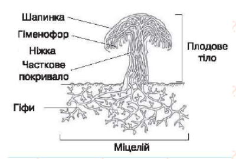

Нещодавня прогулянка лісом надихнула урізноманітнити текст для домашки, тому сьогодні поговоримо про гриби.
Грибів на нашій планеті безліч. Я не шукала точну кількість (та і кому це цікаво?), але зі статей зрозуміла, що вчені взагалі-то і не визначились з їх точною кількістю. Але ясно одне - вони повсюду. Звісно, що маються наувазі не тільки ті гриби, по які люди з кошиками у ліс ходять. Основне їх різномаїття складають мікроскопічні гриби. Іншими словами, і та шовковиста павутинна цвіль, яку ви точно хоч раз у житті бачили на хлібі, і великі нарости на деревах,і лишай на тілі тварини - це все гриби. До речі, на тему завоювання грибами світу є безліч фільмів, серіалів,та навіть відеоігор. З інформації нижче ви зрозумієте чому.
Що таке гриби?
Тож, що взагалі таке гриби? Першим поривом було запитати Google, тому відповідь є!
Гриби – це величезна група організмів, які належать до царства грибів. Наука, що вивчає підрозділ природи про ці живі організми називається мікологією. Гриби є важливою частиною екосистеми й мають різноманітні форми та розміри. Вони можуть бути одноклітинними (наприклад, дріжджі) або багатоклітинними (наприклад, боровик, печериця, моховик).
Моторошні факти, на яких базуються фільми
Тривалий час учені не могли визначити, до якого царства живої природи належать гриби. Гриби ростуть упродовж усього життя і досить швидко збільшуються. Гриби схожі на рослини і на тварин та мають схожі ознаки (дихають, живляться, розмножуються, ростуть, відмирають), але це особливе царство перебуває між рослинами і тваринами.
Подібно до рослин гриби не рухаються, ведуть прикріплений спосіб життя, але не мають хлорофілу, тому утворювати
органічні речовини не можуть, постійно ростуть, поглинають поживні речовини за допомогою утворень, що нагадують
корені.
Хлорофіл - це така речовина, яка зафарбовує рослини в зелений колір. Для росту грибам
не потрібне світло . Вони ростуть навіть у темряві.
Але подібно до тварин живляться готовими органічними
речовинами. Готові органічні речовини гриби можуть брати з відмерлих організмів, пеньків дерев. Після
детального вивчення їх виокремили в самостійну групу організмів.
Види грибів.
Гриби досить різноманітні, та навантажувати завумною інформацією раптових читачів не буду. Цей розділ для того, щоб попрактикуватися додатково зі списками.
- Слизовики (Міксоміцети) – це гриби, вегетативне тіло яких представлено голою плазмовою масою із численною кількістю ядер або щільним скупченням амеб.
- Справжні гриби (Eumycota) – еукаріотичні гетеротрофні стінні організми. Їхня клітинна стінка складається з хітину. Хітин надає міцність і структурну підтримку клітинам грибів. Крім того, він є проникним для газів та розчинників, що дає змогу грибам обмінюватися речовинами з довкіллям.
- Нижчі гриби – належать до групи грибів, які вважаються найпримітивнішими з еволюційної точки зору. Ця група включає мікроскопічні гриби, такі як дріжджі, мухомори та пліснява. Нижчі гриби мають специфічні статеві структури та розмножуються за допомогою спор, які формуються на спеціальних органах.
- Вищі гриби – належать до розвиненої групи грибів, які мають складнішу морфологію та біологію. Ця група включає широкий спектр грибів, від печериць і боровиків до грибів-паразитів і моховиків. Вищі гриби характеризуються великими плодовими тілами, мають шапки та ніжки, а розмножуються за допомогою спор, які утворюються на базидії.
-
Їстівні гриби.
Можуть бути використані в їжу без попереднього відварювання і вимочування. Це:-
білий гриб
Найчастіше в кулінарії використовуються всього лише кілька підвидів:
- білий гриб сосновий
- білий гриб березовий
- білий гриб дубовий (боровик королівський)
- напівбілий (боровик сітчастий)
- підберезник
- опеньок
- маслюк
- печериця
- лисичка та інші.
-
білий гриб
- Умовно-їстівні (або умовно-небезпечні) гриби.
Перед приготуванням в їжу гриби цієї групи потрібно попередньо обробити: проварити або добре вимочити. Прикладами таких грибів є:- дубовик
- синяк
- сморчок, та ін.
-
Небезпечні гриби.
При використанні їх в їжу іноді трапляються смертельні випадки, але зазвичай все обходиться розладом шлунка, підвищенням температури тіла і т.д. До них відносяться:- червоний і паітерний мухомори
- несправжні опеньки
- жовчний гриб
- порхавка
- печериці темночешуйчасті тощо.
-
Отруйні, або смертельно небезпечні гриби.
Сюди входить, в першу чергу:- бліда поганка
- мухомор поганковідний
- мухомор білий
- мухомор смердючий
- строчок
Ну і, звісно, мені б дуже хотілося поділитись власними фотографіями з прогулянки лісом.
Будова гриба.
Гриби мають зарактерну будову, яку пропоную розглянути на схематичному зображенні: 
Розмноження грибів
Гриби можуть розмножуватися різними способами: статево, нестатево, вегетативно та брунькуванням. Давайте розглянемо кожен із цих способів докладніше:
-
Статеве розмноження.
Багато грибів мають статевий цикл розмноження, що включає злиття гамет або спеціалізованих репродуктивних структур. У цьому процесі гриби утворюють спеціальні статеві структури, такі як аски або базидії, у яких з’являються гамети. Гамети з’єднуються, утворюючи зиготу, яка розвивається в новий гриб. Цей процес забезпечує генетичну різноманітність у популяції грибів. -
Безстатеве розмноження спорами.
Безліч грибів розмножуються безстатево за допомогою спор. Гриби утворюють спеціалізовані репродуктивні структури, (спорангії), у яких з’являються спори. Спори є мікроскопічними елементами, що містять генетичний матеріал гриба. Вони викидаються в навколишнє середовище й можуть поширюватися вітром, водою, тваринами або іншими способами. Якщо спори потрапляють у відповідні умови, вони можуть прорости й розвинутися в новий гриб. -
Вегетативне розмноження.
Це розмноження, під час якого частини міцелію розділяються або відокремлюються і розвиваються в самостійні гриби. Це може статися, наприклад, коли частка міцелію розростається і формує нову колонію грибів, або коли певна частина міцелію відділяється і продовжує рости як самостійний гриб. -
Брунькування.
Приклад такого розмноження можна побачити на дріжджах, які також належать до царства грибів. У цьому процесі спостерігається виділення невеликої випуклості або бруньки з дорослого дріжджового гриба, яка зростає і розвивається в окремий гриб. Бруньки можуть відокремлюватися від батьківського організму та поширюватися вітром або водою.
Перелічені вище способи розмноження грибів дають їм змогу пристосуватися до різних середовищ, забезпечувати їхнє розповсюдження та збереження генетичної різноманітності.
Цікаві факти
Чи знали ви, що є понад 75 видів грибів, здатних світитися в темноті?
Також є гриби, які на смак нічим не
відрізняються від смаженої курки.
А ще в різних куточках світу можна знайти гриби, які досягають розмірів
синього кита. Наприклад, гігантський гриб Armillaria, якого знайшли в Каліфорнії і визначили, що його вік
складає більш як 1500 років.
Ну і якщо ви вже тут
Друзі поділились зі мною стареньким відео, яке стисло розповідає про
Здавалося б, одноклітинний та нерозумний, але гриб, здатний знаходити вихід з лабіринту та
ефективно об'єднати безліч точок між собою, що в майбутньому може полегшувати людству роботу над логістичними
зв'язками.
Warning!!! Відео на російський мові
На цьому роботу над третьою домашкою завершено. Всім красно дякую за увагу та приділений час!